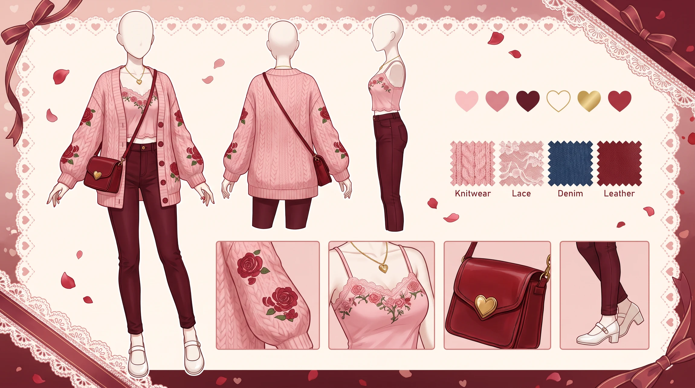
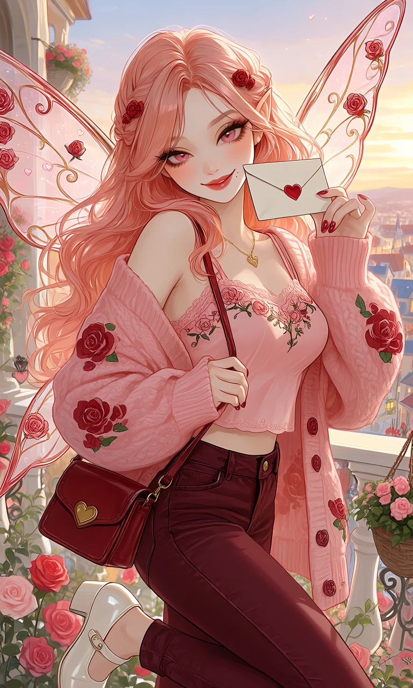
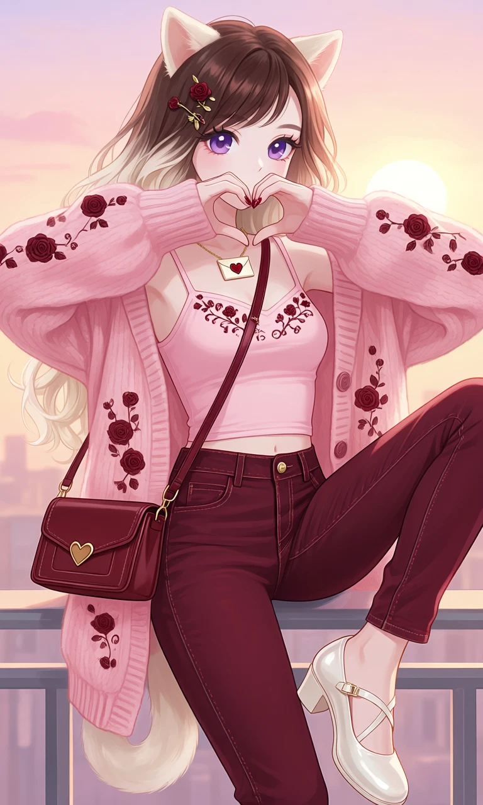

Roses for Two

Outfit Prompt
Cute casual Valentine's Day outfit, romantic feminine fashion, soft pink, dark wine red, ivory white, and gold accents.
A fitted soft-pink cropped camisole with thin spaghetti straps, a rounded neckline, and delicate dark-red rose and curling vine embroidery across the front, leaving the midriff exposed.
An oversized cozy pink knitted cardigan with an open front, long loose sleeves, ribbed cuffs, and dark-red trim along the edges. Dark-red floral patterns decorate the cardigan, with one side slipping casually off the shoulder.
Fitted dark wine-red skinny jeans with a mid-rise waist, traditional pockets, and narrow legs ending at the ankles.
Shiny ivory-white Mary Jane shoes with rounded toes, thin straps, small gold buckles, and low block heels.
A delicate gold necklace with a tiny envelope-shaped pendant featuring a red heart wax seal.
A small dark-red leather crossbody messenger bag with a rectangular shape, adjustable strap, and golden heart-shaped clasp.
Two small dark-red rose hairpins with golden stems and tiny green leaves.
Dark cherry-red nail polish with tiny gold heart accents.
Cozy romantic streetwear, feminine floral details, soft knitted textures, and charming Valentine accessories.
Outfit Examples



